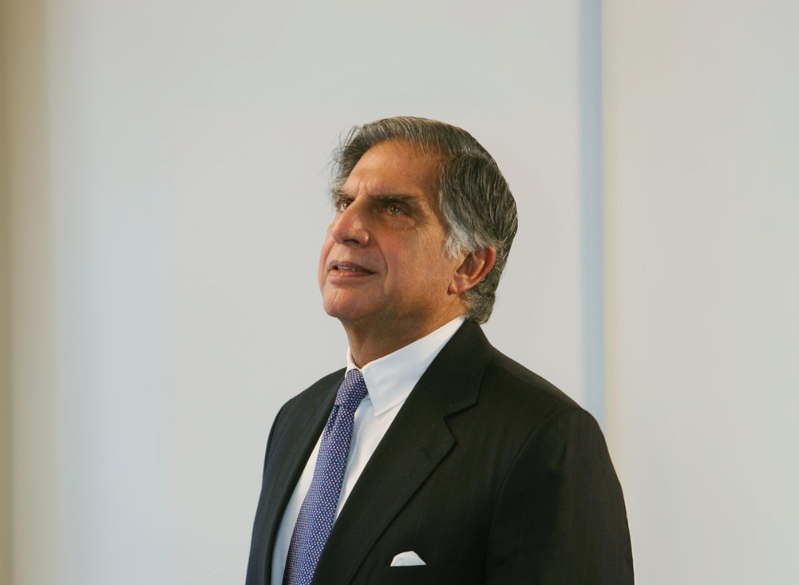

A LIFE OF PURPOSE
A visionary leader who believed that success is meaningful when it creates a positive difference in society.
Explore His Journey ↓
Ratan Naval Tata was one of India's most respected business leaders and philanthropists. Born on December 28, 1937, he grew up in the Tata family and later became an important part of the Tata Group's long history of enterprise and public service.
After joining the Tata Group, he gradually took on leadership responsibilities across different companies. In 1991, he became chairman of Tata Sons and began a period of significant transformation for the group.
Under his leadership, the Tata Group expanded its global presence and became associated with major international acquisitions. His leadership emphasized long-term thinking, innovation, trust, and the importance of building businesses that could contribute to society.
Beyond business, Ratan Tata was widely admired for his philanthropic work and quiet approach to leadership. Through the Tata Trusts and other initiatives, he supported areas such as education, healthcare, research and social development. His legacy continues to inspire young people to combine ambition with responsibility.
Ratan Naval Tata was born on December 28, 1937, in Bombay, now known as Mumbai.
He began his professional journey with the Tata Group after completing his education.
He succeeded J. R. D. Tata as chairman and began reshaping the group for a changing global economy.
The Tata Group expanded internationally through major acquisitions and new business opportunities.
Ratan Tata stepped down as chairman of Tata Sons, while continuing to contribute to business and society.
Ratan Tata passed away on October 9, 2024, leaving behind a legacy of leadership, compassion and service.
Take the stones people throw at you, and use them to build a monument.
Building trust through honesty, responsibility and ethical decision-making.
Encouraging new ideas and looking beyond traditional approaches to solve problems.
Recognizing that businesses can play an important role in improving people's lives.